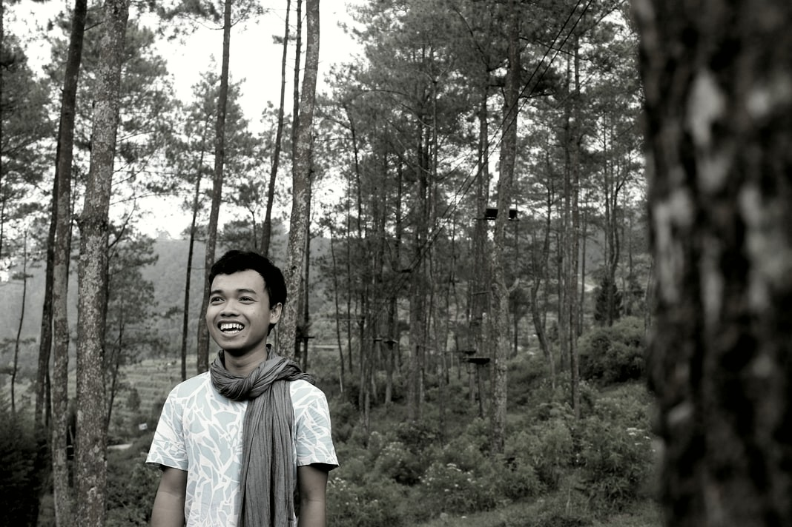

Home
Resta Bayu Setiawan Itulah nama yang diberikan oleh orangtua saya, saya biasa dipanggil Resta atau Bayu, namun ada juga teman-teman saya yang memanggil saya Tekluk, nggak tau kenapa mereka memanggil saya tekluk, saya juga bingung... but saya tidak pernah mempermasalahkan nama panggilan saya. Oke, berikut ini saya lampirkan foto yang saya ambil beberapa tahun lalu saat kumis dan jenggot belum tumbuh liar :D :D

Saat ini status saya sebagai mahasiswa Teknik Informatika program sarjana di STMIK AKAKOM YOGYAKARTA. Aktivitas sehari-hari saya saat ini adalah Kuliah, Pulang, Main dan Belajar (maklum mahasiswa semester tua yang pengen segera lulus). Selain itu saat ini saya juga tengah mengambil penelitian dengan topik ReactJS, yah.. walaupun ReactJS ini merupakan hal yang baru tapi saya yakin untuk kedepannya nanti ReactJS akan banyak digunakan oleh teman-teman penggiat Kode. Mungkin sampai disini dulu halaman selamat datang ini menyambutmu, terimakasih..
Quotes
Teman bermain diperankan oleh perangkat digital, playlist andalan bagai ayat-ayat dalam do'a
Blog